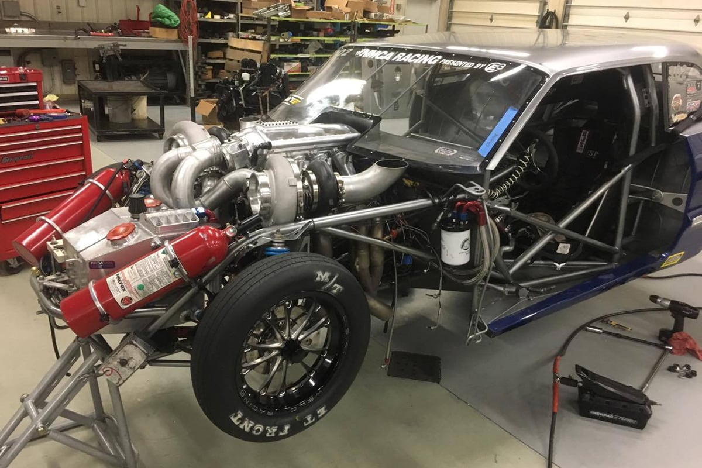

Max Effort LS Builds
Max effort means a purpose built racing engine with parts that can live at very high power. Every system is chosen for strength, heat control, and data. These builds require careful planning, expert assembly, and a real budget.
Part 1: The Foundation
The block is the base of the build. Factory iron blocks are strong for many uses, but true max effort power often needs an aftermarket block.
- Why Aftermarket: Factory castings limit deck thickness, cylinder wall strength, and main support.
- Six Bolt head pattern: More clamping for head gasket seal at very high boost.
- Thick decks: About three quarter inch or more helps the head and gasket stay flat.
- Priority main oiling: Oil feeds the mains and crank first for protection at high load.
- Billet steel main caps: Stronger support for the crank.
- Common choices: Dart LS Next, RHS, and BMP.
Part 2: The Rotating Assembly
Forged parts are required. Balance and clearances must be correct for the planned power and speed.
- Crankshaft: Forged 4340 steel is standard. Callies and Scat are common brands.
- Connecting rods: Forged I-beam or H-beam rods in 6.0" or 6.125" lengths are common. ARP rod bolts are a must.
- Pistons: Forged aluminum with a design that matches the combustion chamber and compression ratio goals. Coatings for heat and friction are common.
- Bearings: Tri-metal or bi-metal bearings from a quality brand like Clevite or ACL.
- Rings: Quality rings with a top ring designed for the application, such as a Napier or keystone style.
- Balance: A professional balance job is required for all rotating parts.
Part 3: Cylinder Heads and Valvetrain
Airflow and valvetrain control make the power. Aftermarket six bolt heads are common for this level.
- Heads: Mast, FED, and Trick Flow offer castings with raised runners and CNC ports for the intended power adder.
- Cams and lifters: Solid roller for stable motion at high speed.
- Rocker System: Shaft mount systems from Jesel or T and D give stable geometry and reduce flex.
- Valves: Stainless steel or titanium for strength and heat resistance.
Part 4: Induction and Fuel
The engine needs air, fuel, and steady oil pressure under high G loads. A dry sump is very common here.
- Oiling Multi stage dry sump with an external tank and belt driven pump keeps pressure steady and reduces windage.
- Fuel C16, E85 or E98, or methanol. Large injectors and a strong pump system sized for the goal.
- Forced induction Large single turbo, twins, or a big centrifugal supercharger with an air to water intercooler.
- Nitrous Direct port with careful control. Often used in drag racing.
Part 5: Engine Management Systems
A standalone EMS is required for max effort builds. The system must control fuel, spark, and boost precisely.
- Popular Systems: AEM, Haltech, and Motec are common choices with strong support for forced induction and data logging.
- Tuning: A professional tuner with experience in high power LS engines is essential to get the most from the build and ensure reliability.